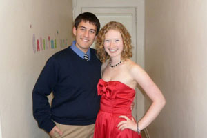
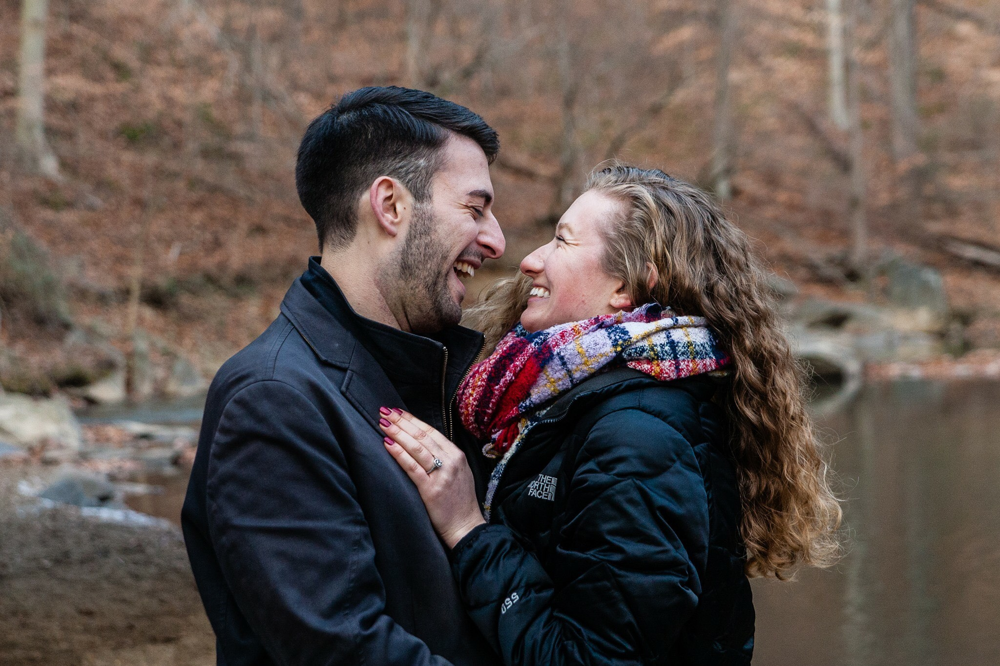

Our story

A little known fact about me: I grew up as a Duke fan. Despite my upbringing and best intentions, I ended up (begrudgingly) enrolling at Duke’s rival school, the University of North Carolina at Chapel Hill. While I am now a lifelong Tar Heel because of the education I earned and the opportunities UNC gave me, I know God sent me there for a very specific reason - He wanted me to meet my best friend and soon-to-be husband. Kevin and I met at a Bible study group in the first month of college, and I was immediately struck by his good-natured humor, warm demeanor, and genuine empathy. I knew right away that he was someone special, and I’m pretty sure I forced my friendship on him in that first year (luckily he was too kind to say no). Over the next three and a half years, we bonded over common classes - Racquet Sports and Drama - Newman Center activities, UNC traditions, and an appreciation for Straight No Chaser and Desperate Housewives.
Looking back on our friendship now, I don’t know how we missed the romantic connection. All in good timing, we say, it let us build a solid foundation. But deep in my heart of hearts, I knew this was the man I would spend my life with because he would always be the one who brought out the best in me - and always with a laugh. As soon as we started dating halfway through our final year of college, we both knew there was no going back. Even the thought of two years of long distance didn’t scare me. When you find a guy like Kevin (and a family like his), you make it work no matter what. So off I went to earn my Masters in New England where I would meet some of my closest friends and have my most formative years of teaching, and off Kevin went to work nights at the Washington Post where he would make some of his closest friends and have his most formative years of designing and editing. Those years were as long as Massachusetts winters, but with the help of Skype calls, the occasional visit, and the grace of God, we made it through stronger than ever.

After graduation, I moved to the DC area as quickly as I could and the pieces seemed to fall easily into place. I found a great job and great co-workers in Northern Virginia, made a dear friend in my new roommate, and was finally able to see Kevin on a regular basis. Our relationship continued to grow deeper as we were able to navigate through adult life together. The day that Kevin proposed to me in the middle of Rock Creek Park was surreal in its beauty and excitement, but saying yes felt as natural as saying his name. Probably because I had decided to say yes seven years prior when he introduced himself to me in front of Hinton James dormitory. Sometimes you just know.
So now, with eight years of friendship behind us and a lifetime ahead of us, we are so honored to have you be a part of this next chapter of our love story. To be able to share our wedding day with the people we love most, the people who have shaped us into the man and woman we are today, is the greatest wedding blessing we could ask for. We look forward to seeing you on June 15th!